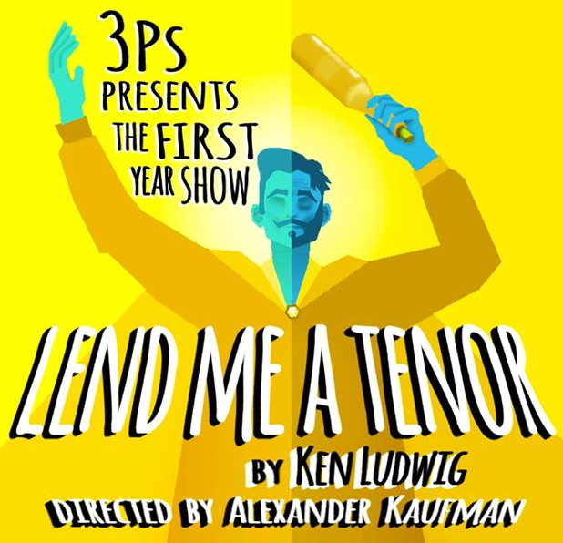
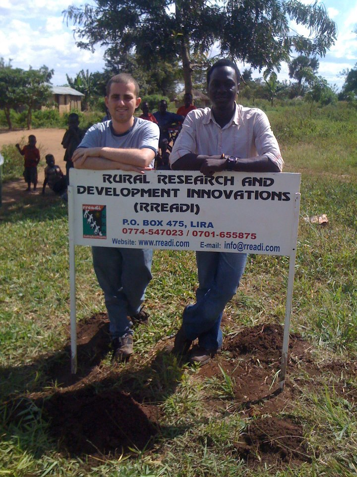

-
The Website Reincarnated
The new Theta Chi website is up and running, but we're still working out the kinks. Thanks for bearing with us!
-
3Ps Presents: Lend Me a Tenor
Tonight, student theater organization Pen, Paint and Pretzels' (3Ps) all-freshman comedy Lend Me a Tenor, directed by our own brother Alex Kaufman, will play for one night only. The show highlights eight different actors, all of whom are making their Tufts theater debut, and gives them an opportunity to have fun with the farcical script. Admission is free and the show premieres in the Balch Arena Theater at 7 and 9 PM.
Find it on Facebook here!
-
Adam in Italy
What do you think of when you think of Italy?

Hi, my name is Adam Kronish and I’m a brother of Theta Chi Fraternity, Epsilon Theta chapter at Tufts University. I’m currently spending my Fall semester abroad in a Direct Enrollment Program at Universita’ degli Studi di Perugia in Italy. Most people answer the question like so: pizza, cappuccino, wine, food, mafia, Godfather, spaghetti and meatballs, Leaning Tower of Pisa, gladiators, gondola, and so many more. And believe me, before studying the Italian culture and language in high school, at Tufts, and beyond I would have said the same things. But now that I’m halfway through my semester in Italy, my answer to this question has drastically changed. Don’t get me wrong, the food, wine, and coffee here are to die for. The mafia does exist and does have a prominent influence (I’m taking an entire course dedicated to it). The Leaning Tower of Pisa is, in fact a tower that is leaning…in Pisa.
I came to Italy with many goals, but I want to address two of them in particular: (1) reach a level of fluency with the language and (2) travel to all of the places that I’ve learned about in the past 8 years of studying Italian.
If you want to learn a language, you need to live where people speak it. From living here, I’ve learned phrases of Italian and Perugian dialect that I would never have learned in a classroom in the U.S. I’m even taking 2 courses at the Italian university here that are dedicated to teaching me the differences in Italian in different types of writing (poetry vs. prose vs. journalism vs. legislation) and the history of the Italian language. From classes, you can learn all of the verb tenses (don’t get me started on congiuntivo) and memorize all of the vocab you can fit in your head, but you never know what is actually useful until you’ve lived where a language is spoken. As far as traveling, I have been to at least 10 Italian cities so far, and each one is as unique as the next. Italy’s regions have different characteristics based on where they are geographically. You can’t learn about Italy’s culture as a whole in a classroom because, in reality, it doesn’t exist. Each region, each providence, each city is different from one another, so drastically that it’s impossible to even make generalizations about a region. One more thing I want to mention, before I end this blog post, is that Theta Chi is always present for a brother, even if he’s on the other side of the ocean. I’ve even ran into 2 other brothers from different chapters since I’ve been here!
Infine, grazie per aver letto tutto quello che avevo scritto, e spero che tutti possano avere un’esperienza all’estero come la mia. [To close, thanks for reading everything that I’ve written and I hope that everyone can have an experience abroad like mine.]
-
Jed's NGO
In July 2012, Jed Silver A’13 co-founded RREADI (Rural Research and Development Innovations), a small NGO that partners with Barongin Village in Northern Uganda to enable people there to access and create economic and social opportunities to stimulate holistic and sustainable rural development. The idea for RREADI came from Jed’s research adviser from his study abroad program, Donnas Ojok, who shared the idea for RREADI and convinced Jed to join him. After spending most of 2012 doing research and fundraising, Jed spent this past Winter break in Barongin with Donnas to conduct a participatory community assessment aimed at building an understanding of the existing assets, challenges, and perceptions about development in the village.
Currently, RREADI is pursuing a project that works with existing savings and loan groups in the community (small groups of 20-30 members that pool small weekly savings, which members can borrow to pay school fees, medical bills, or plant more crops) to build their capacities and promote collective marketing to get higher prices for produce. RREADI’s philosophy is based on extending a helping hand to all who seek it, as it maintains an open dialogue with the community to understand their priorities and involve them as much as possible in the design, implementation, and monitoring of its projects. By doing so, it avoids wasteful, irrelevant and dependency-promoting projects and gives people a resource towards achieving their own progress.
For more information, visit RREADI’s website at www.rreadi.com and if you would like to somehow get involved, please don’t hesitate to contact Jed at jsilv91@gmail.com
-
Courgette daikon
Parsley amaranth tigernut silver beet maize fennel spinach. Ricebean black-eyed pea maize scallion green bean spinach cabbage jícama bell pepper carrot onion corn plantain garbanzo. Sierra leone bologi komatsuna celery peanut swiss chard silver beet squash dandelion maize chicory burdock tatsoi dulse radish wakame beetroot.
-
Greens radish arugula
Caulie dandelion maize lentil collard greens radish arugula sweet pepper water spinach kombu courgette lettuce. Celery coriander bitterleaf epazote radicchio shallot winter purslane collard greens spring onion squash lentil. Artichoke salad bamboo shoot black-eyed pea brussels sprout garlic kohlrabi.
-
Sprout garlic kohlrabi
Parsnip lotus root celery yarrow seakale tomato collard greens tigernut epazote ricebean melon tomatillo soybean chicory broccoli beet greens peanut salad. Lotus root burdock bell pepper chickweed shallot groundnut pea sprouts welsh onion wattle seed pea salsify turnip scallion peanut arugula bamboo shoot onion swiss chard. Avocado tomato peanut soko amaranth grape fennel chickweed mung bean soybean endive squash beet greens carrot chicory green bean. Tigernut dandelion sea lettuce garlic daikon courgette celery maize parsley komatsuna black-eyed pea bell pepper aubergine cauliflower zucchini. Quandong pea chickweed tomatillo quandong cauliflower spinach water spinach.